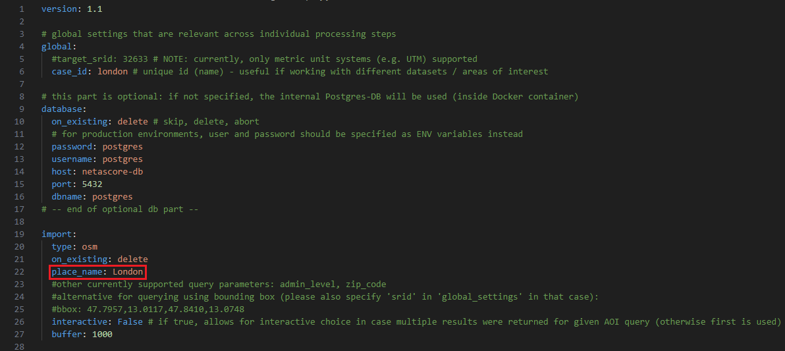

Quickstart-Guide#
How to get started?#
To get a better impression of what this toolset and workflow provides, you can quickly start with processing a sample area, in this case Salzburg, Austria. In this guide you will learn how to run NetAScore for a sample area, how to adjust the settings to run it for your own area of interest and how to add more detail by using additional datasets (e.g. a DEM).
If you run into any bugs when working with NetAScore, please feel free to submit an issue, outlining your problem, as we are very happy to receive feedback and to further improve the toolbox.
Easy quickstart: ready-made Docker image#
The easiest way to get started is running the ready-made Docker image. All you need for this to succeed is a Docker installation, running Docker Desktop and internet connection. In order to run NetAScore for the sample Area, follow these steps:
Install Docker and follow the instructions presented after you selected your operating System and make sure docker is running, the pane on the bottom left of the docker-desktop window should be green, like this:
download the
docker-compose.ymlraw-file from theexamplesand save it to an empty directory, in this Tutorial the directory is calledNetAScorein order to proceed and access the terminal, search for
cmdin your windows search bar (or for terminal on your mac) and open the command prompt app (or Terminal). Proceed by navigating to your previously created empty directory. This can be done by either manually typing the directory`s file path or by dragging and dropping the file into the command line app, similar to the example below:
You can tell that you are now in the correct directory if the filepath given for the directory matches what you previously entered.
from within this directory, execute the following command from the terminal (you should now see a process starting, that opens a connection to the database). Docker will start downloading the NetAScore image and PostgreSQL database image, setup the environment and execute the workflow for the exemplary case of Salzburg, Austria:
docker compose run netascore
running the docker image might take a while, as NetAScore first loads an area of interest by place name from Overpass API, then downloads the respective OpenStreetMap data and afterwards imports, processes and exports the final dataset. You can tell the run was completed successfully once the Database connection is closed, which looks like this:
A new subdirectory named
datawill be present after successful execution. Within this folder, the assessed network is stored innetascore_salzburg.gpkg. It includes bikeability in columnsindex_bike_ftandindex_bike_tfand walkability inindex_walk_ftandindex_walk_tf. The extensionsftandtfrefer to the direction along an edge: from-to or to-from node. These values represent the assessed suitability of a segment for cycling (bikeability) and walking (walkability).
What the results look like:#
Currently, NetAScore does not come with a built-in visualization module. However, you can easily visualize the bikeability and walkability index by loading the resulting geopackage in QGIS. Simply drag and drop the geopackage into a new QGIS project and select the edge layer. Then in layer preferences, open the layer styling panel and define a symbology that visualizes one of the computed index values - e.g. index_bike_ft for bikeability (_ft: bikeability in forward-direction of each segment). Please note that from version 1.0 onwards, an index value of 0 refers to unsuitable infrastructure, whereas 1 represents well suited infrastructure.
This is an exemplary visualization of bikeability for Salzburg, Austria:
Run NetAScore for your own area of interest#
The easiest way to run a network assessment for your own area of interest is by adapting the given example in examples/settings_osm_query.yml:
create a new subdirectory named
data(if you already ran the quickstart example, you can just use thedatadirectory created)download the settings template from
examples/settings_osm_query.ymlfile link.add the mode profiles for bikeability and walkability to the
datadirectory: download both,profile_bike.ymlandprofile_walk.ymlfrom theexamplesfolder.edit your newly created settings file
settings_osm_query.yml- e.g. to download data for the City of London:provide a
case_idinglobalsection (only alphanumeric characters are allowed; this will be added e.g. to the output file name) - e.g.case_id: london
specify a
place_namethat is used to query data from OSM in the sectionimport: e.g.place_name: City of London

run NetAScore by executing the following line from a terminal inside the main directory (parent of
data):docker compose run netascore data/settings_osm_query.yml(Here, the last argument represents the settings file to use. Note that this is the general way of specifying the settings file that should be used.)
NetAScore allows you to directly download OpenStreetMap data via Overpass API. If you want to provide a local OSM-Export you can do so using the ‘filename’ property instead of the ‘place_name’ that is given in the ‘settings_osm_query.yml’. In some cases you might want to specify your search, if the place name given is not unique (e.g. Frankfurt (Main) & Frankfurt (Oder)). To accomplish a specification you can either specify additional parameters:
admin_level: filters the given results for OSMadmin_levelproperty (see OSM documentation)zip_code: filters the given results for a ZIP code (if available in OSM data)
Another option is to set the interactive- Variable to interactive: True, to opt for an interactive prompt.
Please note: Network data is being queried based on the bounding box (rectangle) containing the polygon returned for the place name query. If you do not specify a reference system (global option target_srid), the UTM zone suitable for the centroid of the area of interest is used.
For further information on additional options for OSM see the settings documentation.
Add more detail#
The example settings use OpenStreetMap data as the only input. While this gives a good first estimate of bikeability and walkability, utilizing additional input datasets can further improve the quality of results. NetAScore supports additional datasets such as DEM (digital elevation model) and noise (e.g. traffic noise corridors). If you want to add a DEM as an additional dataset, we recommend using a DEM with at least a 10 m resolution (or finer), to have the necessary level of detail. Please refer to the settings documentation for details on the contents of the settings file and possible modifications.
To add optional input data sets, see the exemplary workflow below:
Example: adding a DEM as an additional dataset:#
acquire the file(s) for your area of interest - availability of DEM, noise map, etc. may largely depend on the area of interest - in our case a DEM of Great Britain, in order to add elevation to our previous area of interest (London).
add the file(s) to the
datasubdirectory (where the settings file and mode profiles are located)edit the settings file to add the new datasets and store it inside the
datafolder - in our case, because we want to add elevation and the projection differs from the default, we have to change thedemsubsection ofoptional(seesettings_osm_file.ymlfor template):filenamehas to be changed to the name of the respective DEM-file we want to usesridhas to be changed from the default to the EPSG-code of the DEM (in our examplary case it has to be 27700, as the DEM is projected in the British National Grid).
execute NetAScore from the parent directory:
docker compose run netascore data/<your_settings_file>.yml(where<your_settings_file>refers to the file name you chose for the edited settings file)
Using the same workflow, other additional data could also be added, for more options see the settings-documentation.
For additional information on working with docker and NetAScore, please refer to the docker-guide.